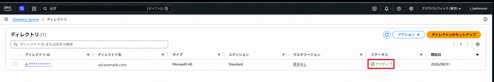
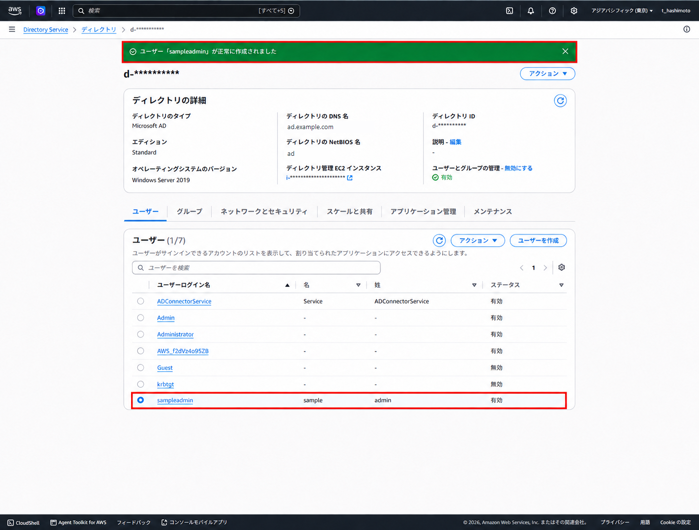
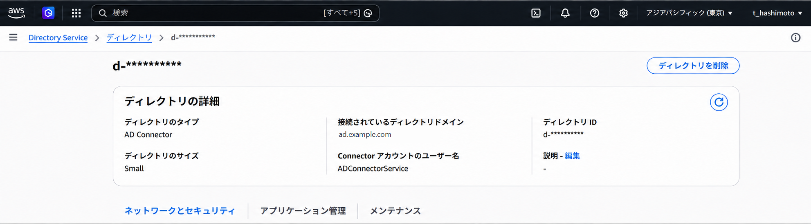

AWS Directory Service 運用手順
AWS Managed Microsoft ADの構築から、ユーザー・グループ、AD Connector、GPOの運用までを一連の手順として整理する
権限分離、変更前確認、反映確認、削除時の影響確認を含め、安全に保守するための判断基準をまとめる
1. 対象範囲
| 分類 | 対象 | 主な操作 |
|---|---|---|
| ディレクトリ | AWS Managed Microsoft AD | 作成、状態確認、管理端末の準備 |
| アカウント | ユーザー、グループ | 作成、削除、メンバー追加・削除 |
| 接続 | AD Connector | サービスアカウント、権限委任、作成、状態確認 |
| ポリシー | Group Policy Object（GPO） | 作成、設定、リンク、優先度、リンク解除、削除 |
画面例ではDirectory ID、EC2インスタンスID、AWSアカウントIDをマスクしている。実環境のパスワード、IPアドレス、接続先、顧客名は手順書や作業記録へ記載せず、承認された保管先で管理する
2. 検証構成
ディレクトリと接続元をVPCで分離し、VPCピアリング、ルート、セキュリティグループ、DNS到達性を揃えて接続する。図には公開可能なVPC名とCIDRだけを記載する
| 確認対象 | 確認内容 |
|---|---|
| AD DNS名 | ad.example.com |
| サブネット | ディレクトリ用サブネットを異なるAvailability Zoneへ配置 |
| ルート | 両VPCの対象サブネットから相手CIDRへの戻り経路を含めて設定 |
| DNS | 接続元からAD DNSサーバーへ名前解決できることを確認 |
| 通信 | DNS、Kerberos、LDAP、SMB、RPCなど、Directory Serviceの要件に沿って許可 |
3. AWS Managed Microsoft ADの作成
- Directory Serviceコンソールで
ディレクトリのセットアップを選択 AWS Managed Microsoft ADを選択し、エディション、DNS名、NetBIOS名を入力- 管理用
Adminパスワードをパスワード管理基盤へ登録し、手順書や画面キャプチャへ記載しない - 対象VPCと、異なるAvailability Zoneにある同一ネットワークタイプの2サブネットを選択
- 設定を確認して作成し、ステータスが
アクティブになるまで待機 - DNSアドレス、セキュリティグループ、ログ転送、バックアップ方針を記録
Adminはディレクトリ管理専用とし、通常利用やWorkSpaceの割り当てに使用しない。AWS予約OU、予約アカウント、AWS管理GPOは変更・削除しない

4. ユーザーとグループの管理
AWS Directory Service Dataを有効にすると、プライマリリージョンのコンソールから標準的なユーザー・グループ管理を実行できる。OU、詳細属性、委任などの操作は、ドメイン参加済み管理端末のActive Directoryユーザーとコンピューター（ADUC）を使用する
ユーザー・グループ管理の有効化
- 対象ディレクトリの詳細を開き、
ユーザーとグループの管理を確認 - 無効の場合は
有効化を選択 - 作業者へ必要最小限のDirectory Service Data権限を付与
- ユーザーとグループのタブが表示され、参照できることを確認
ユーザーの作成・削除
ユーザーを作成を選択し、ログイン名、氏名、初期パスワードを入力- 既存の命名規則、重複、所属部署、利用期限を確認して作成
- 作成後、対象ユーザーのステータスが有効であることを確認
- 削除時は、WorkSpaces、グループ、ファイル所有権、アプリケーション割り当てを確認
- 対象を再確認して削除し、検索結果から消えたことを確認

グループへの追加・削除
- 対象グループを開き、用途、スコープ、権限所有者を確認
メンバーを追加から対象ユーザーを選択- 追加後のメンバー一覧とユーザー側の所属グループを確認
- 削除時は権限喪失の影響と代替グループを確認
- 対象メンバーだけを削除し、一覧と実効権限を再確認
画面取得や手順確認には、本番利用者や特権グループではなく、削除可能な検証専用ユーザーを使用する。パスワード変更、無効化、削除の実行者と時刻を作業記録へ残す
5. AD Connector用サービスアカウント
Domain Adminsを常用せず、AD Connector専用のサービスアカウントと委任グループを作成する。通常はユーザー・グループの読み取り権限を付与し、WorkSpacesまたはシームレスドメイン参加を使用する場合だけ、対象OUへのコンピューターオブジェクト作成権限を追加する
- ADUCでグローバル・セキュリティグループ
Connectorsを作成 - コンピューターオブジェクトを作成する専用OUを決定
- 委任ウィザードで
Connectorsへ必要な読み取り権限を付与 - WorkSpacesを使用する場合は、対象OUに限ってコンピューターオブジェクトの作成・削除・書き込み権限を追加
- 専用サービスアカウントを作成し、
Connectorsへ追加 - 対話ログオンを許可せず、パスワードの保管、更新日、更新担当、AD Connector側の更新手順を定義
ドメインルート全体ではなく、AD Connectorが使用するOUへ限定する。サービスアカウントをDomain Adminsへ追加しない。パスワード変更後はDirectory Service側のサービスアカウント認証情報も更新する
6. AD Connectorの作成
- 接続元VPCの2サブネットから既存ADのDNSサーバーへ到達できることを確認
- Directory Serviceコンソールで
AD Connectorを選択 - サイズ、説明、完全修飾ドメイン名、NetBIOS名、DNSサーバーIPを入力
- 接続元VPCと異なるAvailability Zoneの2サブネットを選択
- 専用サービスアカウントのユーザー名とパスワードを入力
- 作成後、ステータスが
アクティブであることを確認 - Directory ID、接続ドメイン、VPC、サブネット、DNSアドレス、サービスアカウント名を照合

完全修飾ドメイン名、DNSサーバーIP、サービスアカウントの資格情報、委任権限、ルート、セキュリティグループ、ネットワークACL、時刻同期の順に切り分ける。資格情報をログへ出力しない
7. GPO管理
GPO本体、リンク、リンク順序は別の管理対象である。変更前にGPOバックアップ、対象OU、既存リンク、継承、セキュリティフィルター、WMIフィルターを記録する
GPOの新規作成
- 管理端末で
gpmc.mscを開き、対象ドメインのグループ ポリシー オブジェクトを選択 新規を選択し、用途と対象が分かる名称を入力- 新規GPOに設定がないこと、既存GPOを誤って選択していないことを確認
GPOへの設定値の反映
- 対象GPOを右クリックして
編集を選択 - コンピューターまたはユーザーの構成から対象ポリシーを開く
- 変更前値、変更後値、根拠、影響範囲、戻し値を作業記録へ残す
- GPMCの
設定タブで意図した値だけが反映されたことを確認
ドメインまたはOUへのリンクと解除
- 対象ドメインまたはOUを選択し、
既存のGPOのリンクを選択 - GPO名と対象OUを再確認してリンク
- リンク解除時は対象OUのリンクを選択し、GPO本体ではなくリンクだけを削除
- 別のOUにリンクが残る場合、GPO本体の設定は引き続き適用されることを確認
適用順序の変更
- 対象OUの
リンクされたグループ ポリシー オブジェクトを表示 - 上矢印・下矢印でリンク順序を変更
- 同じ設定が競合するGPO、継承、強制、ブロックの状態を確認
gpresult /hでクライアントの実効結果を確認
GPOの削除
- GPOをバックアップし、全リンク、所有者、委任、セキュリティフィルターを確認
- 必要なリンクを解除し、対象OUへの影響を確認
- GPO本体を削除する必要がある場合だけ、
グループ ポリシー オブジェクト配下から削除 - 削除後、GPMC検索、イベントログ、対象端末の
gpresultを確認
OU上のリンクを削除してもGPO本体は残る。GPO本体を削除すると、そのGPOを参照するすべてのリンクへ影響する。全リンクを確認できない状態では削除しない
8. 反映確認
管理者としてコマンドプロンプトまたはPowerShellを開き、ポリシー更新と実効結果を確認する
gpupdate /force
gpresult /r
gpresult /h C:\Temp\gpresult.html| 確認対象 | 判定 |
|---|---|
| Managed Microsoft AD | ステータスがアクティブで、2つのDNSアドレスを確認できる |
| ユーザー | サインイン、無効化、パスワード変更、削除が承認どおりに反映 |
| グループ | メンバー一覧と対象ユーザーの実効権限が一致 |
| AD Connector | ステータスがアクティブで、接続ドメインとサービスアカウントが一致 |
| GPO | 適用GPO、リンク順序、設定値がgpresultと一致 |
9. 運用上の注意
- ユーザー削除、グループ権限変更、GPO削除は、申請者と作業者を分離し、対象を相互確認
- Directory Service Dataの書き込み権限は常設せず、必要な担当者と用途へ限定
- サービスアカウントは人の操作に使用せず、パスワード更新時はADとAD Connectorを同一作業で更新
- デフォルトドメインポリシー、Fine-Grained Password Policy（PSO）、各OUのGPOを混同しない
- PSOはユーザーまたはグローバルセキュリティグループへ割り当てる。OUへリンクするGPOとは適用方式が異なる
- 変更後は設定画面だけでなく、対象端末の実効結果とイベントログで確認